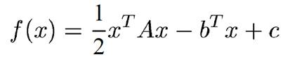
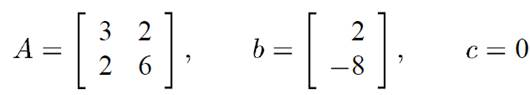
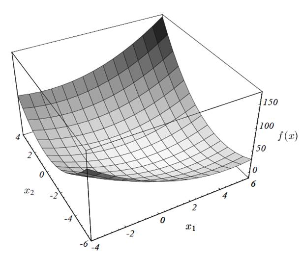
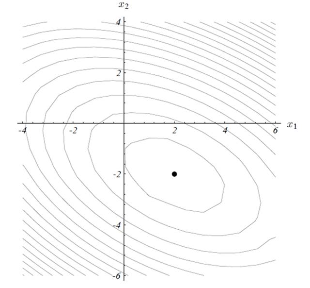
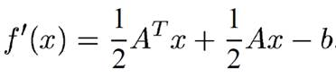
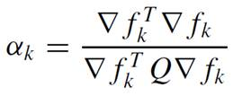
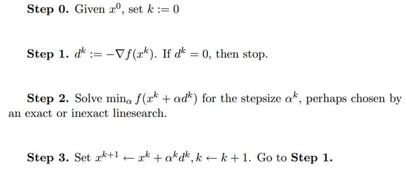

梯度下降法及其实现
摘要
本文主要介绍了梯度下降法的原理和方法，结合二次型的具体实例来阐述梯度下降的过程，使用三维可视化技术实现了一个梯度下降的演示程序。
引言
梯度下降法是一种最优化算法，在最优化理论里面也叫最速下降法，在常用的优化算法当中算是最简单的一种算法了。一般来说求解优化问题根据具体情况有很多其他更好的办法，不过下降法思想是其他大多数优化迭代算法的基础。
梯度下降法
对于一般的优化问题，可以表述成这样的形式，给定，要求得一个使得最小，也即
梯度下降法是求解无约束优化问题的一种优化方法，无约束是针对可行域来说的，也即可行域没有约束。另外，梯度下降法适合求解凸优化问题，本文讨论的都是针对凸优化问题范围之内的。
以一个二次型为例：

如果我们确定好A, b, c，就能确定整个函数，比如给定

我们可以把它的函数画出来

为了对函数值的分布有直观的印象，我们可以把它对应的等高线画出来，如下图所示：

对于这个函数的最优化，我们要实现的目标就是找到函数的最小值点，从等高线图中，我们可以明显的看出最小值点在(2,-2)附近。但是如何设计一个算法进行自动求解呢？一种自然的想法是求得这个函数的导数，然后令导数为0解出方程，对于多元来说则是令梯度为零向量解出正规方程。这确实是一种可行的办法，但是需要注意的是正规方程的求解是需要求逆的，而我们知道矩阵求逆的代价非常大，其时间复杂度为对于维数较多、矩阵较大的函数，这样的运算量太大了。此外，梯度组成的正规方程不一定是可解的，例如超越方程等，可能有人会说，可以利用数值方法求解，但是不要忘了数值方法也是用的迭代的方法，梯度下降法正是迭代求解的一种方法，至于他们求解的快慢，则需要比较收敛速度。
对于上面的二次型函数，其对应的梯度为：

我们知道，梯度方向是函数上升最快的方向，而我们需要求解的是最小值点，通过取梯度的反方向就能得到下降最快的方向，但有个问题，在函数可行域里面任意取定一个点，沿着它的梯度反方向（最速下降方向）的一条射线，并不一定能够经过最小值点的。对于一维函数来说，是会经过的，因为方向也就两个方向，往最速下降方向肯定能找到最小值点。对于二维和多维，情况就不一样了，但是我们可以通过迭代下降的方法来求解。
对于一般的下降算法来说有两大方法：线性搜索和信赖域，线性搜索在每次迭代的时候确定好方向，然后选定步长进行迭代，最后直到收敛。而信赖域算法是根据一定的原则，直接确定位移，同时，与线性搜索不同的是，它并没有先确定搜索方向，如果根据“某种原则”确定的位移能使目标函数值充分下降，则扩大信赖域，若不能使目标函数值充分下降，则缩小信赖域，如此迭代下去，直到收敛。这里我们讨论线性搜索方法。
对于线性搜索，其迭代过程为：

其中x为可行解，α为步长，p为方向，从这个过程中可以看出，要解决的两个问题就是：一、如何确定方向，二、如何确定步长。对于方向的确定，刚刚已经提到过，梯度下降法的迭代方向为梯度的反向法，那步长怎么确定呢？当我们确定好方向以后，要想在本次迭代取得到下降的最大值，问题就转化成了求一元函数的最小值点。具体来说，步长的确定方法主要可分为精确步长和非精确步长，精确的步长确定方法可以用解析式法，也就是直接求解上面一元函数的最小值点，但是大多数情况下是难以得到步长的解析式的，这种情况下则可以采用0.618法。非精确步长方法主要有Armijo、Wolfe-Powell方法，其主要思路是缩小步长的范围，这里不做详细介绍，有个时候也用固定步长进行迭代，其优点就是简单方便，但是缺点就是收敛速度慢，并且有个时候不一定能收敛。
对于上面的二次型来说，是可以写出单次迭代一元函数最小值求解表达式的，不过有个条件，就是A必须正定，不然不存在最小值点的，这里用Q来表示正定的A，解得其结果为：

确定好了这个步长，每次迭代的时候就能找到该方向上的最小值点，然后再结合迭代方向，就能在全局的可行域内进行下降搜索。不过最后还需要给定一个算法终止条件，当每次迭代梯度比较小的时候，下降就进行得很慢了，所以可以通过给定条件来确定终止条件。
总的来说，梯度下降法的算法步骤为：

梯度下降法的实现
根据上述原理，可以写出梯度下降法的具体算法出来，这里采用C++进行实现。
首先定义一个待求解问题的结构体，这个结构体中包含了待求解的函数、函数的梯度、初始搜索位置、终止条件、最大迭代次数以及每次步长的确定策略。其具体的定义为：
Struct Problem{
FUNC<N> f_;
GRAD<N> grad_;
Vec<N> x0_;
double epsilon_;
int maxiterate_;
STEPFUNC<N> step_;
}
对于下降算法，由于它们的步骤都比较类似，所以可以将梯度算法抽象出来，具体的梯度下降法则通过虚函数来给定方向搜索策略，下降算法的通用框架为：
class Desent {
public:
Vec<N> operator()(const Problem<N>& p)const
{
Vec<N> x = p.x0_;
for (int i = 0; i < p.maxiterate_; i++) {
Vec<N> g = p.grad_(x);
if (g.norm() <= p.epsilon_)
break; // converge
Vec<N> d = this->dir(p, x);
double steplength = p.step_(x, g, d);
x += steplength * d;
if (postproc)
postproc(x);
}
return x;
}
std::function<void(const Vec<N>&)> postproc;
protected:
virtual Vec<N> dir(const Problem<N>& p, const Vec<N>& x) const= 0;
};
而梯度下降法则是对下降法框架的方向进行确定：
class SteepestDesent
: public Desent<N>{
public:
protected:
virtual Vec<N> dir(const Problem<N>& p, const Vec<N>& x)const
{
return -p.grad_(x);
}
};
这样，每次给定一个Problem，就能通过SteepestDesent来求得最优解。
局限
对于梯度下降法来说，虽然每一步是最速下降的，但是全局收敛速度并不快，特别是在接近最小值的时候，梯度很小，导致下降的速度减慢，对于一些狭长地带甚至会“之字形”下降。
参考文献
[1] Nocedal J, Wright S. Numerical optimization[M]. Springer Science & Business Media, 2006.
[2] Shewchuk J R. An introduction to the conjugate gradient method without the agonizing pain[J]. 1994.
[3]袁亚湘, 孙文瑜. 最优化理论和方法[J]. 1997.